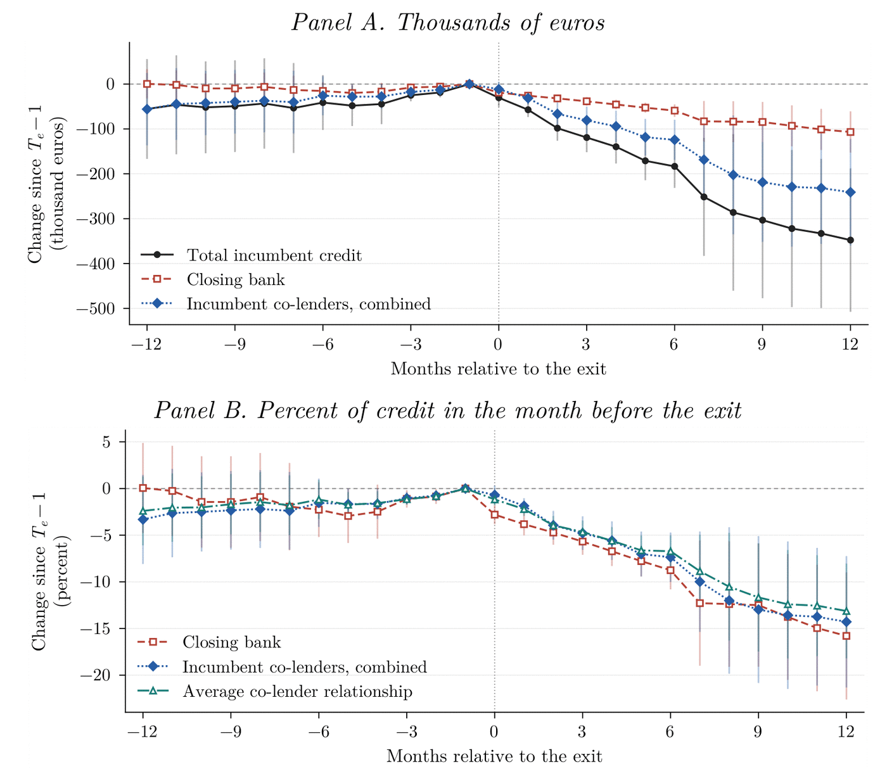

The Retreat of Local Banking: Spillover Effects on SME Credit
As technological transformation leads banks to retreat from local markets, in a frictionless credit market, firms can be expected to rely on other lenders to step in as substitutes. Instead, using Italian loan-level data with lenders’ default forecasts, we find that when a bank leaves a municipality, an affected firm’s incumbent co-lenders act as complements and cut credit as well. One year after the exit, incumbent co-lenders account for 69 percent of the decline in the firm’s credit from its incumbent banks. Relative to their other borrowers in the same municipality, they cut credit to affected firms by an extra 4.2 percent. The cut reflects both an increase in borrower risk and a deterioration of lender information: affected firms default more often, and the co-lenders’ default forecasts become less accurate. Co-lenders with a branch in the municipality lose little forecast accuracy and cut about half as much as those without one, implying that lost information accounts for 29 percent of the cut. Lending by a firm’s other banks is thus complementary to local banks’ presence, implying that branch closures generate negative externalities across the wider credit market.
